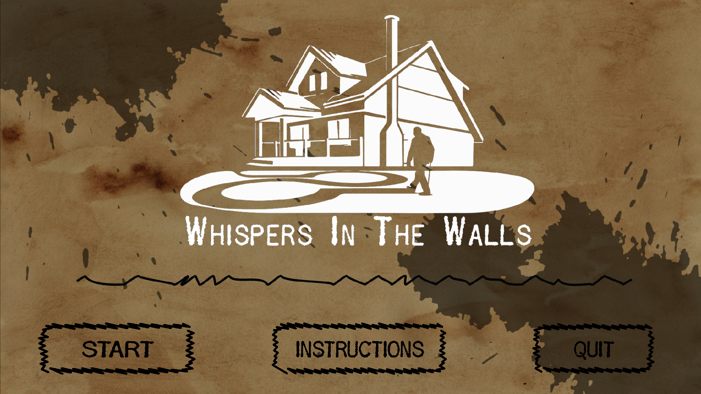
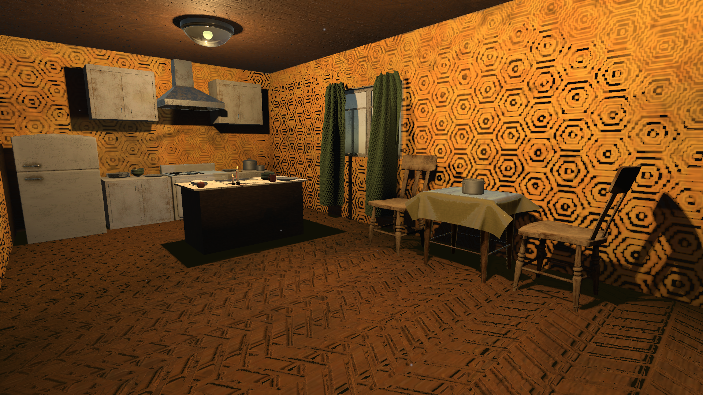

Whispers in the Walls
About:
Whispers in the Walls is a horror game with a deeper meaning. As the game progresses, the player will play through surreal experiences. More supernatural things start occurring, and the player will feel creeped out by it, while getting intrigued by what is actually going on.In actuality, this is a game made to complement a campaign that raises awareness about Alzheimer's disease. This was a cause close to our hearts, as some of us have loved ones affected by it. I was in charge of developing an incredible concept that captures the daily struggles of those living with the illness, conveying their feelings of confusion, loneliness, and frustration. We wanted the game to feel creepy, but not quite horror yet.
I have written the main story, a lot of the dialogue, and I have also been the voice actor for every major role. This project was a deeply meaningful experience, allowing us to merge creativity with purpose and use game design as a tool for awareness and empathy.
This game was created in three weeks.
Created by:
Gone But Not Forgotten​Engine:
Made in UnityPlatforms:
WindowsScreenshots:
 
Link:
Download it for free on my Itch page!
Download the Windows version for free on my Itch page!